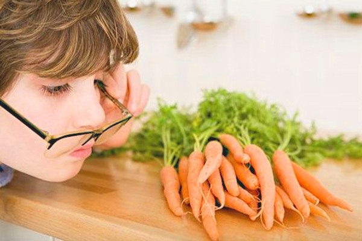
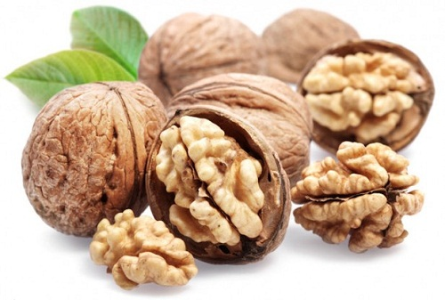
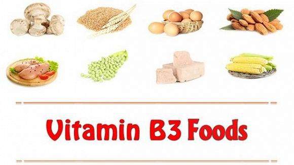

Chế độ dinh dưỡng cho mắt là vô cùng quan trọng, nó giúp cho mắt tinh hơn, khỏe hơn, không bị mờ, không bị tăng độ (nếu cận thị). Cho nên từ trước đến nay, những người mắt kém – mắt cận thị rất chú trọng đến việc bổ sung dinh dưỡng cho cơ thể. Vậy nên ăn gì bổ mắt cận và cho cơ thể khỏe mạnh?
Theo như nghiên cứu của các chuyên gia dinh dưỡng đầu ngành thì các thực phẩm nhóm A, giàu omega 3, thực phẩm nhóm 3, thực phẩm màu đỏ…là những loại thức ăn tốt cho mắt không riêng gì mắt cận. Cho nên bạn đừng quên dùng chúng thường xuyên nhé!
THỰC PHẨM NHÓM A
Bạn băn khoăn nên ăn gì bổ mắt cận khi danh sách thực phẩm nhóm A quá nhiều. Thực tế thực phẩm nhóm A tức là những thức ăn giàu vitamin A như gan, cá biển, bơ, cà rốt, sữa, trứng, gan gà, gan lợn, đu đủ chín, trứng vịt lộn, rau ngót, lươn, rau dền…Bạn nên dung nạp chúng bởi chúng giàu vitamin A – một loại vitamin không thể thiếu trong cơ thể, giúp tăng cường tị lức, giúp mắt sáng khỏe hơn.
THỰC PHẨM GIÀU OMEGA 3 
Đây là loại thực phẩm không chỉ tốt cho mắt mà còn giúp ích cho trí óc, sức khỏe. Chúng được tìm thấy nhiều trong các loại thức ăn như các loại cá, các loại hạt, tinh dầu thực vật, quả óc chó, dầu oliu, tinh dầu hạt lanh…Thi thoảng bạn hãy bổ sung chúng trong thực đơn gia đình mình để cả nhà có đôi mắt sáng khỏe mạnh nhé!
THỰC PHẨM NHÓM B 
Nên ăn gì bổ mắt cận? Bạn nên ăn nhiều thức ăn chứa vitamin B – chúng sẽ giúp mắt bạn bớt mờ, nhìn rõ hơn. Loại thức ăn trong nhóm B phổ biến như thịt nạc, gà, bò, các loại đậu, rau cần, rau cải, trứng, sữa, tim, thận, gan….
ĂN NHIỀU THỨC ĂN MÀU ĐỎ
Theo nghiên cứu những loại thức ăn màu đỏ như cam, quýt, cà rốt…rất giàu beta carotene là loại chất chống oxy hóa hữu hiệu. Khi bổ sung nhóm thức ăn này sẽ giúp chống lại tình trạng mờ mắt, mỏi mắt – tăng thị lực cho mắt cận.
Trên đây là danh sách những loại thức ăn có khả năng giúp mắt cận tăng thị lực hiệu quả. Bạn hãy nghiên cứu và lên ngay cho mình một thực đơn khoa học bổ sung chúng hàng ngày để sáng mắt, lợi sức khỏe nhé! Chúc bạn luôn có được đôi mắt đẹp, tinh anh!